① 会社・基本データ
桧家住宅は、全館空調「Z空調」を標準装備するコスパ型・高気密高断熱の住宅メーカー。2020年10月にヤマダ電機（現ヤマダホールディングス）のTOBが成立し連結子会社化、2022年4月25日にヒノキヤグループは上場廃止となりヤマダHDの完全子会社として再編された。
| 項目 | 内容 |
|---|---|
| 会社名 | 株式会社 桧家住宅（Hinokiya Housing） |
| 設立 | 1988年10月13日（前身：桧家産業。1980年創業） |
| 本社 | 東京都千代田区丸の内1-8-3 丸の内トラストタワー本館7階 |
| 資本金 | 3億8,990万円（株式会社桧家住宅）／1億円（株式会社ヒノキヤグループ） |
| 持株会社 | 株式会社ヒノキヤグループ（旧・東証プライム上場。2022年4月25日上場廃止） |
| 親会社 | 株式会社ヤマダホールディングス |
| グループ売上高 | 1,448億9千万円（ヒノキヤグループ2024年12月期連結・前期比+1.9%・3期連続過去最高） |
| 住建事業合計売上 | 3,168億円（ヤマダHD住建事業・2025年3月期、前期比+13.3%） |
| 年間販売戸数 | 桧家住宅単体 約4,094棟（2024年）／グループ合算値は非公表 |
| 対応エリア | 本体直営＋FC（フランチャイズ）で関東・東海・関西・四国・九州中心。沖縄・北海道一部は非対応 |
| 事業内容 | 注文住宅・分譲住宅・リフォーム・不動産・戸建分譲・賃貸・保険 |
| グループ会社 | ヤマダホームズ／桧家リフォーミング／レスコハウス／日本中央住販／パパまるハウス 等 |
沿革のポイント
- 2004年：全館空調「Z空調」の原型を開発開始
- 2013年：Z空調を商品化（グッドデザイン賞受賞）
- 2020年10月：ヤマダ電機（現ヤマダHD）がTOBを成立させヒノキヤグループを連結子会社化
- 2022年4月25日：ヒノキヤグループ上場廃止 → ヤマダHDの完全子会社として再編
- 2024年：ヤマダホームズとの商品統合・相互販売が進展
- 2025年：決算期を12月末→3月末に変更（ヤマダHD本体に合わせる）
一言で言うと？
「全館空調『Z空調』を標準装備した、コスパ型・高気密高断熱の住宅メーカー」。家中どこでも温度ムラが少ない快適性を、他社全館空調の約半額〜で実現。ヤマダHDグループ入り後は家電連携（ヤマダ家電10年保証等）も強化。30代共働き・Instagram映え志向のファミリー層に人気。
② 商品ラインナップと坪単価
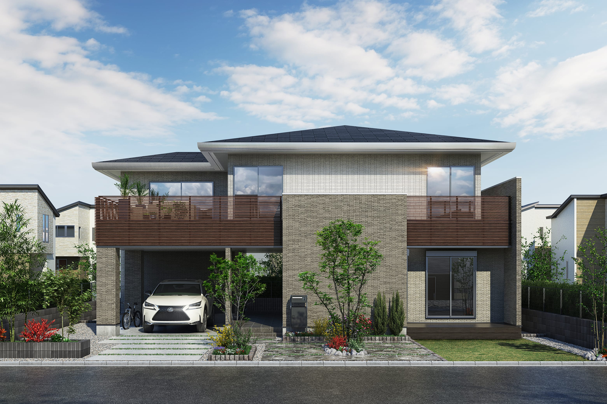
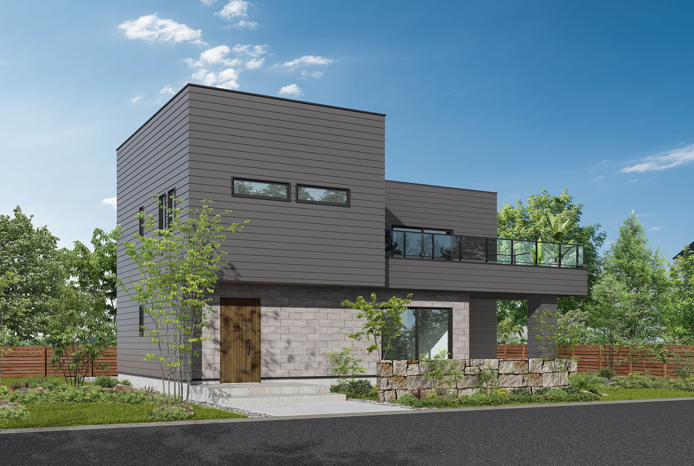
注文・規格住宅（主要ライン）
| 商品名 | 坪単価目安（2026年） | 形式 | 主な特徴 |
|---|---|---|---|
| Smart One（スマートワン） | 55〜70万円 | 規格住宅 | 主力商品。300以上の間取りから選ぶセミオーダー。Z空調標準 |
| Smart One Custom（スマートワンカスタム） | 60〜80万円 | セミオーダー | 矩形パレットを組み合わせ自由設計に近づける。平屋・3階建・二世帯対応 |
| Smart One Select | 50〜60万円 | 規格住宅 | シンプル・低価格版。Z空調は一部プランのみ |
| The Elite One（エリートワン） | 70〜95万円 | 最上位 | 2024年11月発売。断熱等級6・C値0.4・ハイグレード外装 |
| 平屋（Smart One 平屋） | 60〜80万円 | 規格平屋 | 青空リビング付きプランあり |
| アクティブガレージ | 70〜90万円 | ガレージハウス | インナーガレージ＋居住空間のプロデュース商品 |
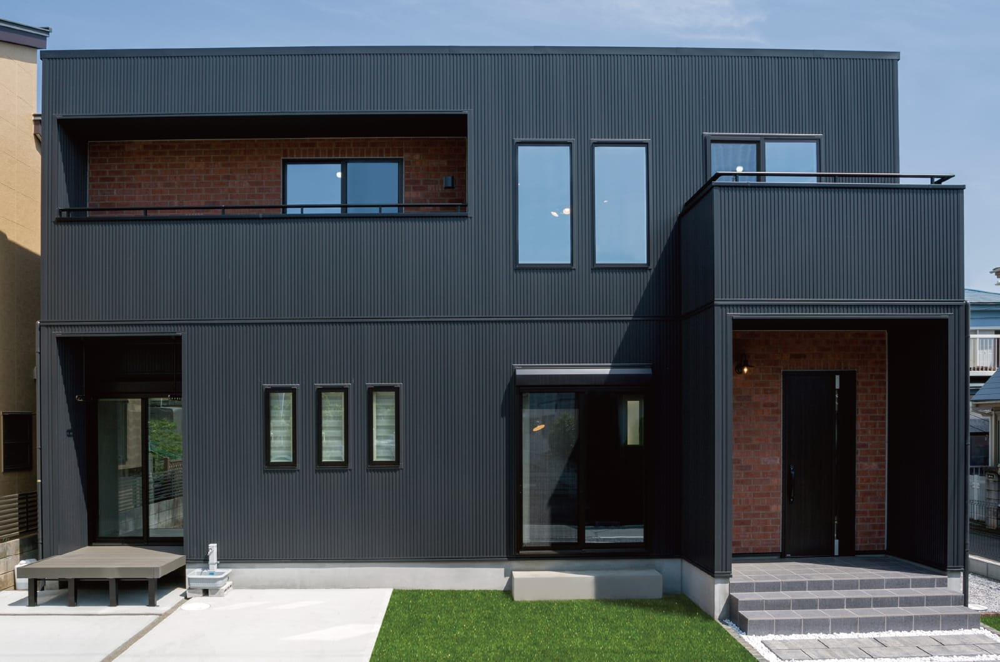
オプション・特徴設備
| 設備名 | 内容 | 目安費用 |
|---|---|---|
| Z空調 | 全館空調（1階1台＋2階1台のダイキン製隠蔽型エアコン＋ココチE換気） | 約90〜100万円（標準コミ価格） |
| 青空リビング | 屋上庭園。ウッドデッキ付き8〜12畳の屋上スペース | 約90〜150万円（仕様・広さによる。施主実例は屋上用家具COLORS込みで90万円前後） |
| アクアフォームNEO | 現場吹付け硬質ウレタン断熱（標準） | 標準装備 |
| 太陽光発電 | 5〜10kW対応 | 約150〜250万円 |
実態ベース坪単価（SNS・施主ブログ集計）
| 条件 | 本体坪単価 | 30坪総額目安 |
|---|---|---|
| Smart One（Z空調込み・標準） | 61〜78万円 | 2,100〜2,500万円 |
| Smart One Custom（諸経費・外構込み実態） | 75〜93万円 | 2,400〜2,900万円 |
| The Elite One（断熱等級6・標準） | 80〜95万円 | 2,600〜3,100万円 |
| 青空リビング・アクティブガレージ追加 | +5〜15万円/坪 | +150〜400万円 |
年度別坪単価の推移（Smart One基準）
| 年 | 坪単価目安 | 備考 |
|---|---|---|
| 2018年 | 約50〜55万円 | Z空調込み実態 |
| 2020年 | 約55〜60万円 | ヤマダHD傘下入り前後 |
| 2023年 | 約60〜70万円 | ウッドショック・円安影響 |
| 2025年 | 約65〜78万円 | 全商品値上げ |
| 2026年 | 約68〜85万円 | The Elite One投入で最上位帯拡大 |
「坪40万円台」の広告を見かけるが、実態はZ空調・外構・諸経費込みで坪65〜80万円前後に着地するケースが多数。SUUMO公開データでもSmart One実例平均は坪65.4万円。
③ 構造・工法
在来軸組＋構造用パネル（ハイブリッド工法）
桧家住宅は木造軸組工法（在来工法）をベースに、構造用面材（パネル）を組み合わせたハイブリッド工法を採用。
| 項目 | 詳細 |
|---|---|
| 工法 | 木造軸組工法＋構造用面材（モノコック的効果） |
| 柱・梁 | 集成材（ホワイトウッド・レッドウッド等）。無垢桧ではない |
| 構造用面材 | 耐力面材を外周に貼り、壁倍率を向上 |
| 金物工法 | 在来の仕口・継手ではなくボルト＋ドリフトピンによる金物接合。断面欠損を最小化 |
| 床 | 剛床工法（24mm構造用合板） |
基礎
| 項目 | 内容 |
|---|---|
| 基礎形式 | ベタ基礎（国の基準を上回る厚さ150mm） |
| 鉄筋 | D13異形鉄筋＠200mmピッチ |
| コンクリート強度 | 設計基準強度24N/mm²（一般は18〜21N/mm²） |
| 防湿対策 | 全面防湿シート＋ベタ基礎でシロアリ・湿気侵入を抑制 |
| 基礎高 | GL+400mm（通気・点検性確保） |
社名の「桧家」について
「桧（ひのき）」の名を冠するが、標準仕様で桧を主要構造材として使っているわけではない。基本は集成材の柱・梁構成で、桧材は名前の由来・ブランドイメージに近い。無垢桧を希望する場合は別途オプション対応になる。
④ 耐震性能
耐震等級
| 項目 | 内容 |
|---|---|
| 耐震等級 | 等級3（最高等級・消防署/警察署相当）を標準 |
| 取得方法 | 壁量計算＋構造用面材＋金物工法で等級3を全棟クリア |
| 制震 | 制震ダンパー「MIRAIE（ミライエ）」をオプションで追加可能（1棟約50万円） |
| 実大実験 | 過去に震度7相当の加振試験を実施。大きな損傷なしと公表 |
制震ダンパー「MIRAIE」（オプション）
- 特殊高減衰ゴムを使用した住友ゴム製のダンパー
- 建物の揺れを最大95%低減（メーカー公称値）
- 熊本地震（2016）で採用住宅の被害低減事例あり
- 地震発生時の繰り返し振動による構造疲労を抑制
他社耐震との比較（代表値）
| メーカー | 耐震等級 | 標準制震 | 振動実験規模 |
|---|---|---|---|
| 桧家住宅 | 等級3 | × （MIRAIEオプション） | 震度7相当 |
| 一条工務店 | 等級3 | × （2倍耐震オプション） | E-ディフェンス震動台で震度7級・大地震波を数十回規模 |
| 住友林業 | 等級3 | × （ジーアスオプション） | 震度7相当 |
| 積水ハウス（シャーウッド） | 等級3 | 〇（シーカス標準） | 震度7相当 |
| タマホーム | 等級3 | × | 限定的 |
耐震等級3は大手のスタンダードライン。ただし制震ダンパーは標準ではない点に注意。愛知・東海は南海トラフ想定エリアのため、制震オプション（MIRAIE）の追加を推奨する設計士・工務店も多い。
⑤ 断熱性能
アクアフォームNEO（現場吹付け硬質ウレタンフォーム）
桧家住宅の断熱は自社グループ日本アクアが供給する現場発泡ウレタン「アクアフォームNEO」が標準。
| 項目 | 内容 |
|---|---|
| 種類 | 建築物断熱用硬質ウレタンフォーム A種1H（独立気泡・HFO発泡剤使用） |
| 熱伝導率 | 0.021 W/(m・K) 以下 |
| 施工 | 現場で吹付け → 柱間・梁間の隙間に密着し膨張 |
| 特徴 | 独立気泡構造で吸水性が低く、HFO発泡剤採用によりノンフロン・低GWPを実現。自己接着性があり経年変化での隙間・沈下が小さい。グラスウール比で気密確保しやすい |
| 厚さ（壁） | 75〜90mm（壁充填） |
| 厚さ（天井） | 180〜200mm |
※ 参考：アクアフォーム（無印／連続気泡・水発泡・A種3）は熱伝導率 0.034 W/(m・K) で、桧家住宅では現行標準は独立気泡のアクアフォームNEO。
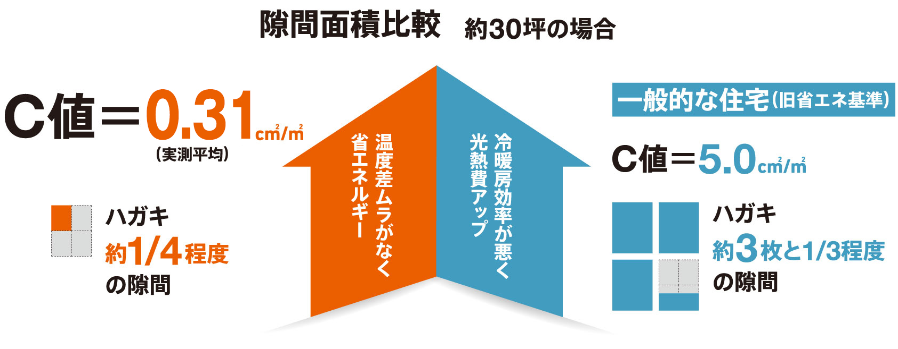
UA値（外皮平均熱貫流率）
| 商品 | UA値 | 断熱等級 | ZEH基準 |
|---|---|---|---|
| The Elite One | 0.46前後 | 等級6 | 〇 |
| Smart One（標準） | 0.53〜0.55 | 等級5 | 〇（ZEH基準クリア） |
| Smart One Select | 0.56〜0.60 | 等級4〜5 | 地域次第 |
| （参考）国の省エネ基準 | 0.87 | 等級4 | — |
窓・サッシ
| 項目 | 標準仕様 |
|---|---|
| サッシ | アルミ樹脂複合サッシ（Smart One標準） |
| ガラス | Low-E複層ガラス（アルゴンガス封入） |
| The Elite One | オール樹脂サッシ＋Low-Eトリプルガラス |
| 玄関ドア | 高断熱D2〜D3仕様 |
他社断熱との比較（代表値）
| メーカー | UA値（代表） | 断熱等級 | 窓標準 |
|---|---|---|---|
| 一条工務店（i-smart） | 0.25 | 等級7 | オール樹脂トリプル |
| タマホーム（笑顔の家） | 0.23 | 等級7 | オール樹脂トリプル |
| 桧家 The Elite One | 0.46 | 等級6 | オール樹脂トリプル |
| 桧家 Smart One 標準 | 0.53 | 等級5 | アルミ樹脂Low-E複層 |
| アエラホーム（プレスティージ） | 0.43 | 等級6 | アルミ樹脂 |
| 住友林業 | 0.46 | 等級5 | アルミ樹脂 |
桧家の強みは「Z空調による温度ムラ低減」であり、絶対的な断熱性能（UA値）では一条工務店・タマホーム最上位には及ばない。Z空調を回し続けて快適性を稼ぐ設計思想。
⑥ 気密性能
C値（相当隙間面積）
| 項目 | 数値 |
|---|---|
| Smart One標準 実測平均C値 | 0.31 cm²/m²（業界トップクラス） |
| The Elite One | 0.4 cm²/m²（公称） |
| 社内保証基準 | 1.0 cm²/m²以下 |
| 一般住宅の目安 | 2.0〜5.0 cm²/m² |
測定方法
- 断熱施工直後に実測：アクアフォームNEO吹付け直後に気密測定を実施
- 基準未達時の再処理：目標値に届かない場合は断熱材の増吹付け → 再測定
- 全棟実測ではない：実測するのは一部サンプル／希望者のみのFCもある（公式ではZ空調のため気密は重要と謳うが、全棟実測までは一条ほど徹底されていない）
吹付ウレタン断熱の注意点（中立解説）
メリット
- 気密確保が容易
- 隙間なし
- 施工スピード早い
デメリット（経年）
- 長期での収縮・剥離の可能性（独立気泡A種1HのNEOは水発泡のA種3よりは寸法安定性が高いとされる）
- 施工不良（薄吹き・吹きムラ）に気付きにくい
- 火災時の有害ガス発生（ウレタン系共通）
- 将来のリフォーム時、断熱材の入れ替えが困難
他社気密との比較
| メーカー | C値（代表値） | 全棟測定 |
|---|---|---|
| 桧家住宅 | 0.31（実測平均） | 一部／希望者 |
| 一条工務店 | 0.59 | 全棟 |
| 住友林業 | 非公表 | 希望者 |
| 積水ハウス | 非公表 | 実施せず |
| タマホーム | 非公表 | 実施せず |
⑦ 換気・空調システム（Z空調の詳細）
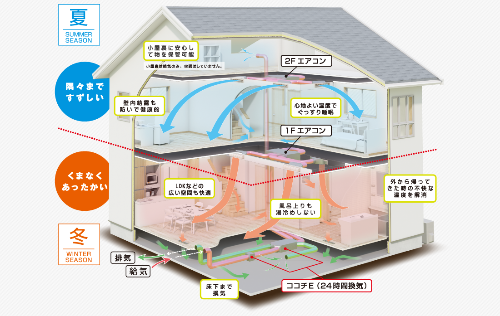
桧家住宅の最大の差別化ポイント。全館空調「Z空調」は累計約3万棟以上の採用実績（2024年12月時点で3万棟突破を公式発表）を持ち、全館空調として国内シェアNo.1（公式）。
Z空調の仕組み
Z空調 = 第1種熱交換換気「ココチE」 × ダイキン製エアコン × 最小限ダクト
| 構成要素 | 内容 |
|---|---|
| 換気 | 協立エアテック製「ココチE」。第1種全熱交換換気、熱交換率約80% |
| エアコン | ダイキン製エアコン。1F・2Fに各1台、計2台（約45坪まで2台搭載） |
| ダクト | 各部屋の天井へ最小限のダクトを伸ばし、暖気／冷気を分配 |
| 設計思想 | 「各部屋エアコン」ではなく「家全体を1台のエアコン気積」として空調する |
温熱交換の実力
- 夏: 外気35度 → 熱交換後28〜30度で室内取込 → エアコンで冷却 → 室内25〜27度維持
- 冬: 外気0度 → 熱交換後12度前後まで暖めて取込 → エアコンで加熱 → 室内21〜23度維持
- 熱交換率：約80%（ロスガード90の90%よりはやや劣る）
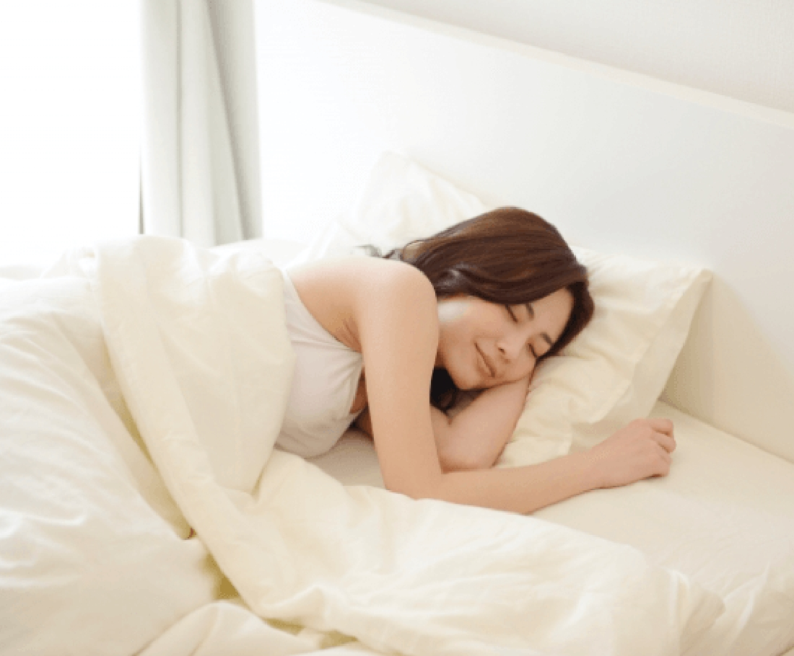
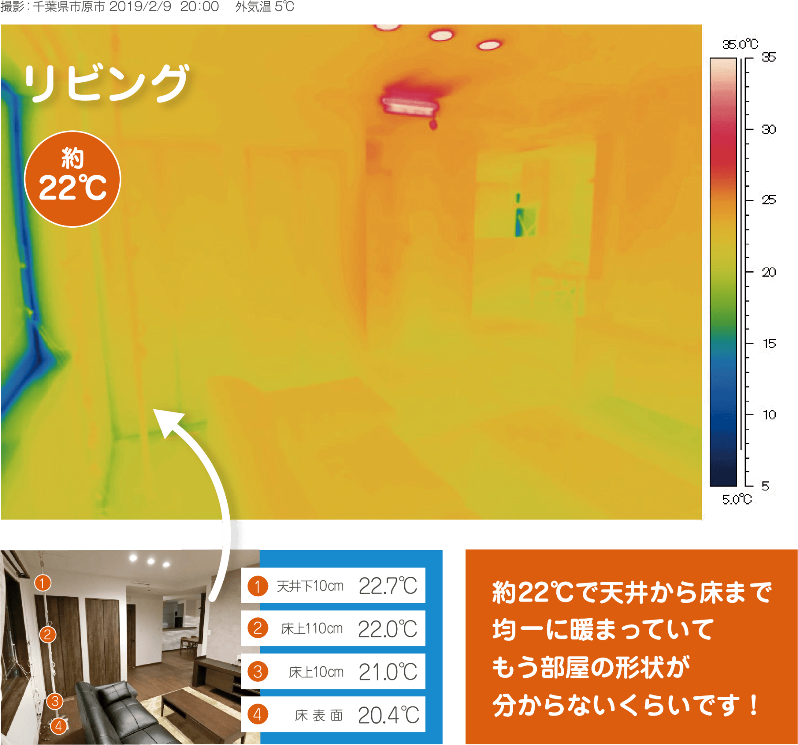
電気代の実態（施主ブログ集計・2024〜2025）
| 条件 | 月額電気代目安 |
|---|---|
| 30坪／夏（7〜9月）／エアコン24時間 | 約7,000〜12,000円 |
| 30坪／冬（12〜2月）／24時間 | 約10,000〜20,000円 |
| 30坪／春秋（空調オフ期） | 約3,000〜6,000円 |
| 年間合計の目安 | 公式実測調査で約11万円（30〜40坪・4〜6地域／2023年調査）。寒冷地・30坪以上は+2〜5万円程度。施主ブログ集計では10〜16万円の幅 |
| 全館オール電化（Z空調込み総額） | 月平均約15,000〜22,000円 |
メンテナンス・コスト
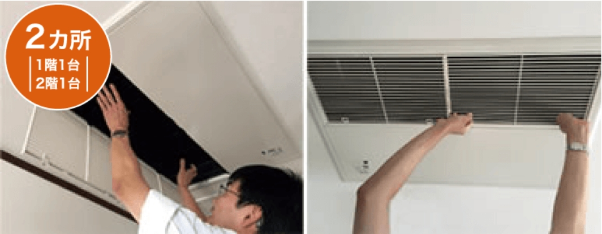
| 項目 | 内容・頻度・費用 |
|---|---|
| フィルター清掃 | 2〜3ヶ月に1回（自分で可能） |
| フィルター交換 | 年1回。1セット数千円〜1万円 |
| ダクト内部清掃 | 5〜10年に1回推奨。専門業者で5〜10万円 |
| エアコン本体清掃 | 3〜5年に1回。1台3〜5万円（隠蔽型のため割高） |
| エアコン交換 | 10〜15年。1台30〜40万円×2台＝約60〜80万円 |
| ココチE熱交換素子 | 10〜15年で交換推奨。数万円〜 |
| 保証 | 10年間修理回数無制限の無償保証（メーカー1年＋桧家による10年延長）。10年経過後のメンテ・交換は有償 |
Z空調のメリット
- 温度ムラが少ない：廊下・洗面・トイレまで同じ温度 → ヒートショック対策に有効
- 花粉・PM2.5対策：第1種換気でフィルタリング後の空気を循環
- 部屋ごとエアコン不要：各室に壁掛けエアコンがいらない → 見た目スッキリ
- 初期コストが全館空調として安め：他社全館空調（三井ホームのスマートブリーズ・積水ハウスのエアキス等）の半額〜2/3
Z空調のデメリット・注意点（中立・重要）
- 故障時は1フロア全体が止まる：1Fエアコンが故障すれば1F全館が空調不能
- 部屋ごとの温度調整が困難：寝室だけ涼しく／子供部屋だけ暖かくは不得意
- ダクト内のカビリスク：結露・湿気でダクト内部に発生しうる。定期清掃必須
- 乾燥：冬場は湿度30%前後まで低下。加湿器必須（標準加湿機能なし）
- 外部フード寿命：施主ブログでは5〜10年で屋外フードが劣化する事例報告あり
- 10〜15年後のエアコン交換費用：2台で60〜80万円の将来コストを見込むべき
- 電気代は断熱性能に依存：気密・断熱が弱い家ではランニングコスト増加
- 虫侵入：給気口のフィルター掃除を怠ると小虫が室内に侵入する事例あり
ココチE（第1種換気）の特徴
- 熱交換率約80%（全熱交換式）
- PM2.5対応フィルター（オプションで高性能化可）
- 24時間連続運転前提
- メンテナンス：吸気口フィルターの定期清掃が必須
ARCHIST視点：Z空調は「快適性 × 初期コスパ」で魅力的だが、10〜15年後の交換コスト60〜80万円と定期メンテ費をライフサイクルコストに組み込む検討が必要。「全館空調＝安い」という誤解は危険。
⑧ ZEH・省エネ
ZEH対応
| 商品 | ZEH対応 | BELS | ZEH率目標 |
|---|---|---|---|
| The Elite One | ◎（ZEH+ 対応可） | 取得可 | — |
| Smart One | 〇（ZEH基準クリア） | 取得可 | 公表値なし |
| Smart One Custom | 〇 | 取得可 | — |
2026年の補助金対象性
| 補助金 | 対象 | 最大補助額 |
|---|---|---|
| みらいエコ住宅2026 GX志向型 | 等級6＋一次エネルギー25%減＋創エネ | 最大125万円 |
| みらいエコ住宅2026 長期優良 | 長期優良住宅 | 最大80万円 |
| みらいエコ住宅2026 ZEH水準 | ZEH相当 | 最大40万円 |
| ZEH補助金（環境省） | ZEH認証 | 55〜112万円（ZEH+の場合） |
太陽光発電・蓄電池
| 項目 | 内容 |
|---|---|
| パネル容量 | 5kW〜10kW標準、最大12kWまで対応 |
| 費用目安 | 5kW約150万／10kW約250万（2026年時点） |
| 蓄電池 | 容量5〜10kWh対応。約100〜150万円 |
| 売電単価 | FIT 16円/kWh（2026年度・10kW未満） |
| 補助金適用 | ZEH補助・自治体補助と併用可 |
ARCHIST視点：The Elite OneはGX志向型125万円補助の対象になりやすい。Smart One標準（等級5・UA0.53）では最大80万円（長期優良・子育て世帯向け）が現実的。
⑨ デザイン
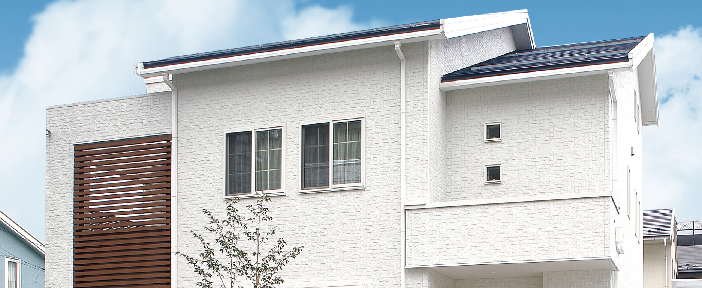
外観の特徴
- 総2階建ての箱型が基本（Smart One系）
- 外壁は窯業系サイディングが標準。一部プランでタイル貼り対応
- ツートンカラー・色分けで個性を出すデザイン提案が多い
- 「建売っぽい」「個性が少ない」という意見もある（規格住宅ベースのため）
内装・設備（Smart One標準仕様 2026）
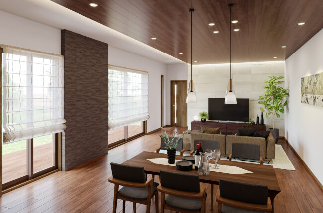
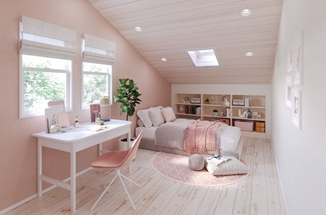
| 設備 | 標準 |
|---|---|
| キッチン | クリナップ／LIXIL／タカラスタンダードから選択（2.55mセット幅・I型／II型） |
| 食洗機 | 浅型食洗機標準（深型はオプション） |
| 浴室（ユニットバス） | 1坪（1616サイズ）標準。LIXIL／TOTO／タカラから選択 |
| トイレ | タンクレス 1階／タンク式 2階 |
| 床材 | シートフローリング（朝日ウッドテック等・大建工業） |
| 玄関ドア | D2仕様（断熱ドア） |
| 照明・カーテン | 別途 |
桧家ならではの設備
| 設備 | 内容 |
|---|---|
| 青空リビング | 屋上庭園。防水＋ウッドデッキで8〜12畳。標準ではなくオプション（約90〜150万円・仕様による。施主実例は屋上用家具COLORS約47万円込みで約90万円前後、塔屋・固定階段フル仕様で150万円程度） |
| アクセントタイル | リビング・玄関へのアクセントタイル施工 |
| Wall Door（ウォールドア） | 壁一体型の見えない収納ドア |
青空リビング（屋上庭園）の詳細
| 項目 | 内容 |
|---|---|
| 構造対応 | 屋上加重に耐える構造補強（木造3階建扱いに近い） |
| 防水 | FRP防水が基本。10〜15年ごとの再防水が必要（1回50〜80万円） |
| 固定階段 | 塔屋＋固定階段（法的に床面積に算入される場合あり） |
| 排水 | ドレン（排水口）×2〜3箇所。ゲリラ豪雨時はオーバーフロー対策必須 |
| 目隠し（COLORS仕様） | 目隠し壁高1.4〜1.8m。プライバシー配慮 |
青空リビングのデメリット（施主ブログ集計）
- 使用頻度が想像より低い（階段を上る手間・食材運搬）
- ゲリラ豪雨で排水が追いつかず「プール化」する事例あり
- 夏は直射日光で暑すぎる／冬は風で使えない
- 防水メンテナンスを怠ると漏水 → 下階へ影響
- 固定資産税の評価額が上がる
⑩ 保証・メンテナンス
長期保証制度（2024年10月改定）
| 保証項目 | 初期保証 | 最大延長 |
|---|---|---|
| 構造躯体・不同沈下 | 30年 | 最長60年（10年ごとの有償メンテ実施が条件） |
| 防水（屋根・外壁） | 15年 | 30年まで延長可 |
| 防蟻（シロアリ） | 20年（業界トップクラス） | 以降は有償更新 |
| 住宅設備 | 1〜2年（メーカー保証） | ヤマダ家電連携で一部10年 |
定期点検スケジュール
引渡し後：3ヶ月 → 1年 → 2年 → 5年 → 10年 → 15年 → 20年 → 25年 → 30年（以降10年ごと）
※ 20年目までは定期点検が無償、21年目以降は有償点検となる（公式アフターサポート）。
ヤマダHDグループ連携の保証
- ヤマダ家電10年保証：入居時に購入した家電（冷蔵庫・洗濯機・エアコン等）の延長保証
- ヤマダホームズ相互サポート：グループ会社間で修理・メンテ対応
- 金融商品連携：ヤマダファイナンスの住宅ローン・リフォームローン
他社保証との比較
| メーカー | 初期構造保証 | 最大延長 | 延長条件 |
|---|---|---|---|
| 桧家住宅 | 30年 | 60年 | 10年ごとの有償メンテ |
| 一条工務店 | 30年 | 30年 | シロアリ予防10年・20年無償 |
| 住友林業 | 30年 | 60年 | 有償点検＋補修工事 |
| 積水ハウス | 30年 | 永年 | 有償メンテ継続 |
| ヘーベルハウス | 30年 | 60年 | 有償メンテ |
| タマホーム | 10年 | 60年 | 有償メンテ |
アフターサービスの評判
良い評判
- 24時間365日の緊急対応窓口あり
- ヤマダ電機店舗が全国にあるため相談しやすい
悪い評判
- 修理依頼から1〜3ヶ月返答なしの事例あり（特にFC加盟店によりばらつき）
- 有償メンテの見積りが高め（外壁塗装・防水工事で他社相見積もりを推奨）
- FC店と直営店でアフター対応の質が異なる
「最長60年保証」は、10年ごとの有償メンテナンス（外壁塗装100〜150万円・屋根防水50〜80万円・シロアリ再処理10〜20万円等）を実施することが延長条件。無条件の60年保証ではない。
⑪ 建築期間
各フェーズの期間目安
| フェーズ | 期間目安 |
|---|---|
| 展示場見学〜間取り決定 | 1〜3ヶ月 |
| 仮契約〜本契約（打ち合わせ） | 2〜4ヶ月 |
| 本契約〜着工（確認申請） | 1〜2ヶ月 |
| 着工〜上棟 | 1〜1.5ヶ月 |
| 上棟〜引渡し | 3〜4ヶ月 |
| 合計（初回来場〜引渡し） | 8〜14ヶ月 |
| 着工〜引渡し | 4〜5.5ヶ月 |
規格住宅の強み
- Smart One（規格住宅）は打ち合わせ3〜5回で完了する簡易プロセス
- 間取りパターンが決まっているため、着工〜引渡しが短い
- 一条工務店より2〜4ヶ月早く引渡される傾向
FC（フランチャイズ）店の注意点
- 桧家住宅は直営店とFC加盟店の混在。地域によってはFC運営
- FC店は技術品質にバラつきあり：現場監督・大工の力量に依存
- 工期・アフター対応もFC店次第
ARCHIST視点：愛知県は直営とFC混在エリア。契約前に「担当営業所が直営かFC加盟店か」を必ず確認すべき。
⑫ 客層・向き不向き
典型的な施主プロファイル
| 属性 | 傾向 |
|---|---|
| 年齢 | 30〜40代中心（子育て世代） |
| 世帯構成 | 共働きファミリー・2〜3人の子育て世代 |
| 世帯年収 | 500〜800万円がボリュームゾーン |
| 最低年収目安 | 400万円〜（Smart One Select） |
| 価値観 | 「性能×コスパ」重視。Instagramで家づくり情報収集 |
| 購入動機 | Z空調の快適性 → 「家中どこでも同じ温度」に魅力を感じる |
桧家住宅を選ぶ理由TOP3
- Z空調で全館快適が標準装備 → 家族全員がヒートショックなく過ごせる
- コスパが良い → 全館空調込みで坪65〜80万円は他社同等条件より割安
- 青空リビング・アクティブガレージ等ユニーク設備 → Instagram映え・家族で楽しめる
施主の特徴
- SNS（Instagram・YouTube）で情報を集めるタイプが多数
- 「絶対零度の冬にも家中あったかい家」を求めて桧家に辿り着くパターン
- 一条工務店と最後まで比較してZ空調の快適さで桧家を選ぶケースも
⑬ 営業攻略
桧家住宅の営業スタイル
- FC店と直営店で大きく差がある。直営はマニュアル整備、FCは営業個人の力量に依存
- 初回見学時からZ空調の魅力訴求に重点が置かれる
- 決算期（3月末）前後の値引き・オプションサービスが強化される（ヤマダHD連結決算に統合）
- 「今月中契約で○○をサービス」系のクロージングトークは通常パターン
値引き・交渉の余地
| 項目 | 交渉可能性 |
|---|---|
| 本体価格値引き | △（定価販売に近いが、決算期で数十万円レベルの値引きはある） |
| オプション無料サービス | ◎（青空リビング一部無償・アクセントタイル追加など） |
| 外構サービス | ○（提携外構業者経由でサービスあり） |
| 家電値引き（ヤマダ家電） | ◎（グループ特典で家電パッケージの大幅値引き可能） |
営業攻略のポイント
- 複数HM相見積もり必須：一条工務店・タマホーム・アエラホーム・地元工務店と最低3社比較
- Z空調の光熱費試算を具体的にもらう：気密・断熱性能と紐づけて月別シミュレーション
- ヤマダ家電セット特典の確認：冷蔵庫・洗濯機・テレビ・エアコン等まとめ買いで大幅値引き
- FC／直営の確認：担当営業所の運営形態を必ず確認。FCの場合は過去の施主レビューを事前確認
- 決算期（2〜3月）交渉：最大値引きが出やすいタイミング
- 青空リビングは後付け不可：迷うなら着工前に決断
注意すべき営業トーク
- 「Z空調は電気代がほとんどかからない」→ 月1〜2万円はかかる
- 「最長60年保証」→ 有償メンテ継続が条件（無条件ではない）
- 「断熱等級6で業界最高クラス」→ The Elite Oneのみ。Smart Oneは等級5
⑭ 他社比較表
総合比較表（同価格帯5社）
| 項目 | 桧家住宅 | 一条工務店 | タマホーム | アエラホーム | ヤマダホームズ |
|---|---|---|---|---|---|
| 坪単価目安 | 55〜95万円 | 80〜105万円 | 50〜80万円 | 60〜90万円 | 60〜90万円 |
| UA値（代表） | 0.53 | 0.25 | 0.23〜0.55 | 0.43 | 0.50 |
| C値（代表） | 0.31 | 0.59 | 非公表 | 0.5（外張断熱） | 非公表 |
| 断熱等級 | 5〜6 | 7 | 4〜7 | 6 | 5 |
| 構造 | 木造軸組+面材 | 木造2×6 | 木造軸組 | 木造軸組+外張 | 木造軸組 |
| 全館空調 | ◎ Z空調標準 | △（床暖房標準） | × | △ | △ |
| 耐震等級 | 等級3 | 等級3 | 等級3 | 等級3 | 等級3 |
| 保証（初期／最大） | 30年／60年 | 30年／30年 | 10年／60年 | 10年／60年 | 30年／60年 |
| 設計自由度 | △〜○ | △（一条ルール） | ○ | ○ | ○ |
| 30坪総額目安 | 1,800〜2,800万円 | 2,500〜3,200万円 | 1,500〜2,400万円 | 1,800〜2,700万円 | 1,800〜2,700万円 |
桧家住宅 vs 一条工務店
| 比較軸 | 桧家住宅 | 一条工務店 |
|---|---|---|
| 断熱・気密 | ○（UA 0.53・C 0.31） | ◎（UA 0.25・C 0.59） |
| 全館空調 | ◎（Z空調標準） | △（全館床暖房標準） |
| コスパ | ◎（Z空調込みで坪65〜80万円） | ○（性能価格比は高いが絶対額は高め） |
| 設計自由度 | ○（Smart One Customは矩形自由） | △（一条ルール） |
| 総額30坪 | 約2,400万円 | 約2,900万円 |
| 向く人 | Z空調の全館快適を予算内で実現したい | 断熱最高峰・光熱費最小化を数値で追求したい |
桧家住宅 vs タマホーム
| 比較軸 | 桧家住宅 | タマホーム |
|---|---|---|
| 価格 | 中（65〜80万円/坪） | 安（50〜70万円/坪） |
| 断熱・気密 | ○〜◎ | ○（大安心の家）〜◎（笑顔の家） |
| 全館空調 | ◎ Z空調標準 | × |
| 耐震 | 等級3 | 等級3 |
| デザイン | ○（規格ベース） | ○ |
| 向く人 | 全館空調で快適性重視 | 予算最優先・シンプル高性能 |
桧家住宅 vs アエラホーム
| 比較軸 | 桧家住宅 | アエラホーム |
|---|---|---|
| 断熱工法 | 吹付ウレタン（内断熱） | 外張り断熱＋充填断熱のW断熱 |
| UA値 | 0.53（Smart One） | 0.43（プレスティージ） |
| 全館空調 | ◎ Z空調 | ○（全館空調オプションあり） |
| コスパ | ◎ | ○ |
| 知名度 | 中（ヤマダグループ） | 中 |
| 向く人 | 全館空調と知名度 | 外張断熱・高気密志向 |
桧家住宅 vs ヤマダホームズ（グループ内比較）
| 比較軸 | 桧家住宅 | ヤマダホームズ |
|---|---|---|
| 主力商品 | Smart One（Z空調標準） | Felidia／エクセリーナ |
| 全館空調 | ◎ Z空調 | オプション |
| デザイン | 規格型・コスパ重視 | 高級志向・大和ハウス元幹部系 |
| 価格帯 | 55〜95万円 | 60〜90万円 |
| 向く人 | Z空調・コスパ重視 | 落ち着いた高級感・重厚デザイン |
⑮ よくある後悔・失敗事例
後悔1: Z空調のメンテ・交換コストが想定以上だった
- 引渡し10年後、1Fエアコン故障 → 天井埋込のため交換工事で1台35万円
- ダクト内部のカビ清掃で6万円（5年ごと推奨と後から知った）
- 外部フード劣化で1箇所あたり3万円×数箇所
対策：契約時に10〜15年後の総メンテ費用見積りを必ずもらう。ライフサイクルコストを検討。
後悔2: Z空調の部屋ごとの温度調整ができない
- 「冷房が効きすぎて寝室は寒い／子供部屋が暑い」
- 各部屋の給気口は開閉のみで、温度個別制御不可
- 個別エアコン追加で電気代がむしろ増えた事例
対策：就寝時の温度差がほしい家族構成なら、Z空調+個別エアコン併用を前提に設計。
後悔3: 冬の乾燥がひどい
- 高気密＋Z空調で冬場の室内湿度が25〜30%まで低下
- フローリング割れ・のどの痛み・肌荒れの報告多数
- 標準で加湿機能なし（一条工務店のうるケアに相当する設備なし）
対策：ハイブリッド加湿器2〜3台／床置き加湿器（パナソニック大容量モデル）を初日から導入。
後悔4: アフターサービスの対応遅延（特にFC店）
- 修理依頼から返答まで1〜3ヶ月の事例あり
- 床鳴り・クロス浮き・水栓不具合の補修依頼が放置されやすい
- FC店だと担当者退職で引継ぎが途絶える事例も
対策：アフター窓口の電話番号・担当者名を引渡し時に必ず確認。メール証跡で依頼。
後悔5: 吹付断熱（アクアフォーム）の経年変化が気になる
- 築15年の物件で「壁内のウレタンが収縮して隙間が見える」との報告
- 火災時に有害ガスが出やすい（ウレタン系共通）
- 断熱材の入れ替えが困難でリフォームで除去費用が発生
対策：30〜40年後の大規模リフォーム時、断熱材交換費用（50〜100万円）を見込む。
後悔6: 営業担当のばらつき（FC店）
- FC加盟店は営業個人の力量・知識量に差がある
- 「Z空調の電気代はほとんどかからない」等の誇大表現を聞いたケース
- 契約後の担当者変更・退職で引継ぎ不良
対策：直営店を選ぶ／FC店の場合は過去10年の施主レビュー確認／契約前に書面で確認。
後悔7: 床鳴り・建具の不具合（施工精度）
- 入居半年〜2年で床鳴り多発。補修してもなお鳴る事例
- ドア・建具の建付け不良
- 木造軸組＋集成材は湿度変化で動きやすく、施工精度が現場の大工次第
対策：引渡し前の確認で床鳴り・建具を徹底チェック。瑕疵担保期間内に必ず是正要求。
後悔8: 青空リビングをほぼ使わなかった
- 最初の1〜2年は夏にBBQ・花火観賞で使用 → 3年目以降は月1回以下
- 防水メンテが10年で発生（50〜80万円）
- 固定資産税評価額が上がり年数万円負担増
対策：ライフスタイルを冷静に想像。「庭・バルコニーで足りる？」を自問。
後悔9: 外壁サイディングの汚れ・色褪せ（3〜5年）
- 窯業系サイディング（標準）は3〜5年で汚れが目立つ
- 10年で再塗装推奨 → 1回80〜120万円の出費
- タイル外壁はオプションで100万円以上
対策：初期投資でタイルに変更するか、外壁色を濃色系にして汚れを目立たせない。
後悔10: 固定資産税の上振れ
- Z空調・青空リビング・太陽光が建物評価額に加算
- 30坪桧家住宅で固定資産税 年9〜12万円（減税期間後）
対策：新築減税（3年半額・長期優良は5年）を予算に組み込む。評価額試算を依頼。
⑯ よくある質問（FAQ）
桧家住宅の坪単価は結局いくら？
Z空調の電気代は実際いくら？
Z空調が故障したらどうなる？
Z空調のメンテナンスは大変？
アクアフォーム（吹付断熱）は大丈夫？
「桧家」なのに桧の家じゃないの？
青空リビング（屋上庭園）は使う？
FC店と直営店は違う？
値引き交渉はできる？
「最長60年保証」は本当？
一条工務店とどっちがいい？
タマホームとどっちが安い？
30坪の総額はいくら？
仮契約金はいくら？返金される？
ヤマダHD傘下で今後どうなる？
⑰ 坪数別建築総額シミュレーション
※ Smart One（Z空調標準）を基準。2026年4月時点の概算。金利1.5%・35年ローン・頭金なしで試算。
坪数別シミュレーション一覧
| 坪数 | 本体工事費 | 建築総額目安 | 月々返済額（35年・1.5%） |
|---|---|---|---|
| 25坪 | 約1,750万円（坪70万円） | 約2,220〜2,280万円 | 約6.8〜7.0万円 |
| 30坪 | 約2,100万円（坪70万円） | 約2,670〜2,770万円 | 約8.2〜8.5万円 |
| 35坪 | 約2,520万円（坪72万円） | 約3,200〜3,300万円 | 約9.9〜10.2万円 |
| 40坪 | 約3,000万円（坪75万円） | 約3,800〜3,900万円 | 約11.7〜12.0万円 |
| 45坪 | 約3,510万円（坪78万円） | 約4,460〜4,560万円 | 約13.7〜14.0万円 |
補足・追加費用
- 上記は土地代を含まない建物のみの金額
- 青空リビング追加：+150〜200万円
- アクティブガレージ追加：+200〜350万円
- The Elite Oneグレードアップ：+10〜15万円/坪
- 太陽光10kW：+250万円（ZEH補助金・GX志向型で最大125万円還元あり）
- 地盤改良：50〜100万円（必要に応じて）
- カーテン・照明：30〜50万円（標準に含まれず）
⑱ 桧家住宅固有の注意点・まとめ
Z空調前提の設計制約
| 項目 | 制約内容 |
|---|---|
| ロスガード型換気ではない | 第1種ココチEで、熱交換率は一条のロスガード90（90%）よりやや劣る（約80%） |
| 天井裏にダクトスペース必要 | 天井高が標準より10〜15cm下がる／吹抜部分の空調設計に制約 |
| 間仕切りに制約 | 給気・還気経路確保のため、完全密閉した個室設計は困難 |
| 2台のエアコン配置 | 1F・2Fに設置スペースが必須。隠蔽位置のメンテ性考慮 |
FC（フランチャイズ）店のばらつき
- 直営店：桧家住宅本体の品質管理基準で運営
- FC加盟店：独立事業者が桧家ブランドで展開。施工・営業・アフターの質にばらつき
- 愛知県：名古屋・一宮・豊橋・岡崎等に直営／FC混在
契約前の必須確認
- 担当営業所は直営かFCか
- FCの場合、加盟店名・運営会社
- 過去10年の引渡し棟数・施主レビュー
- 担当大工・現場監督の経験年数
ヤマダHDグループの動向
- 2020年10月TOB成立で連結子会社化・2022年4月25日上場廃止で完全子会社化
- 2024〜2025年にかけてヤマダホームズとの商品ライン再編が進行中
- Z空調はグループの共通技術として横展開（他ブランドにも供給）
- 注意：今後の経営方針変更（ブランド統合・撤退）のリスクは注視
見えにくいコスト
| 項目 | 目安 |
|---|---|
| Z空調ランニング（10年） | 電気代120〜180万円＋メンテ20〜30万円 |
| Z空調交換（10〜15年後） | 60〜80万円（エアコン2台＋工事） |
| 青空リビング防水再施工 | 10〜15年で50〜80万円 |
| 外壁サイディング再塗装 | 10年で80〜120万円 |
| 建物評価額の上振れ | 固定資産税 年2〜3万円割増 |
仮契約・契約フロー
| 項目 | 内容 |
|---|---|
| 申込金 | 10〜30万円（FC店による） |
| 設計契約 | 別途30〜50万円（プラン詳細化段階） |
| 本契約 | 建築工事請負契約。ここで本体価格が確定 |
| 返金条件 | 仮契約後キャンセル時、設計実費が差し引かれる |
まとめ
- 全館空調「Z空調」を標準装備（業界シェアNo.1・累計3万棟突破）
- C値0.31（Smart One実測平均）で業界トップクラスの気密性
- 全館空調込みで坪65〜80万円のコスパ
- 構造躯体30年／最長60年保証・防蟻20年保証
- ヤマダHDグループの経営基盤と家電連携特典
- 青空リビング・アクティブガレージなどユニーク設備
- UA値はSmart One標準0.53で、一条・タマ最上位には及ばない
- Z空調の10〜15年後交換コスト60〜80万円が必要
- FC加盟店と直営店でアフター品質にばらつき
- 吹付ウレタン断熱の経年変化・火災時有害ガスリスク
- 部屋ごとの温度調整は困難（Z空調の構造上）
- 社名と異なり標準では桧を主要構造材に使わない
こんな人に桧家住宅はオススメ
向いている人
- 全館空調の快適さを予算内で実現したい
- Instagram映えする家を30代予算で建てたい
- 子育て中でヒートショックを防ぎたい
- 花粉・PM2.5に悩まされている
- ヤマダ家電のセット値引き・10年保証を活用したい
向かない人
- 断熱性能を数値で極限まで追求したい（→一条・タマ笑顔の家）
- 予算総額2,000万円以下（→タマホーム・ローコスト）
- 完全フルオーダーで設計自由度を最優先（→住友林業・三井）
- 10〜15年後のZ空調交換コストを避けたい
- アフターサービスの即応性を最重視（→積水・ヘーベル）
- 屋上庭園などのユニーク設備より堅実な住宅性能重視
総合評価（ARCHIST中立視点）
| 評価軸 | 評価 | コメント |
|---|---|---|
| 断熱・気密 | ★★★☆☆ | UA 0.53・C 0.31。等級5〜6水準で業界平均より上 |
| 快適性（Z空調） | ★★★★★ | 国内全館空調シェアNo.1。温度ムラの少なさは体感上位 |
| コスパ | ★★★★☆ | 全館空調込み坪65〜80万円は同等性能HMより安め |
| デザイン自由度 | ★★★☆☆ | Smart One Customなら矩形自由設計可能。規格型のため制約あり |
| 保証・アフター | ★★★☆☆ | 最長60年だが条件付き。FC店のアフターはばらつきあり |
| ランニングコスト | ★★★☆☆ | Z空調電気代・交換費用・防水メンテを織り込むと中位 |
| ブランド安心感 | ★★★★☆ | ヤマダHDグループで経営基盤安定。2022年4月非上場化（完全子会社化） |
ARCHISTからの結論
桧家住宅は「Z空調の全館快適さを予算内で実現する」コスパ型の選択肢。断熱数値の絶対値では一条・タマ最上位に及ばないが、全館空調込みで坪65〜80万円という価格は他社では難しい。10〜15年後のZ空調交換・外壁再塗装・青空リビング防水などライフサイクルコストを織り込んだうえで、愛知県内の担当営業所が直営かFCかを必ず確認してから検討することを強くおすすめする。